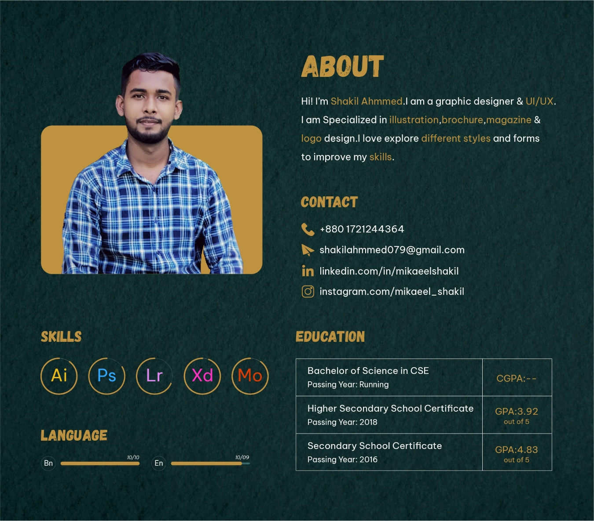

ABOUT PAGE
LOGO
404/1 DSCC,Demra,Dhaka-1361 needhelp@hotmail.com Help / Support / Login
Hello,
I'm an Experienced Graphic & Brand Designer with a passion for creating visually captivating and impactful designs. With a strong background in branding and a keen eye for detail, I strive to craft compelling visual identities that resonate with target audiences.
Throughout my career, I have honed my skills in graphic design, typography, color theory, and layout composition to deliver aesthetically pleasing and effective design solutions. I have a comprehensive understanding of various design software and tools, allowing me to bring my creative visions to life.
Collaboration is a cornerstone of my work ethic, and I thrive in cross-functional teams where I can contribute my design expertise and work alongside other professionals to achieve shared goals. I am adept at interpreting client briefs, conducting research, and translating concepts into visually appealing designs that align with brand values and objectives.
I have successfully executed projects across multiple industries, including but not limited to corporate, e-commerce, and non-profit sectors. My experience encompasses designing logos, marketing collateral, packaging, website graphics, and social media visuals. By maintaining a balance between creativity and functionality, I ensure that my designs not only look visually stunning but also serve their intended purpose.
In addition to my technical skills, I have excellent communication and presentation abilities, enabling me to effectively convey design concepts and collaborate with clients and stakeholders. I thrive in fast-paced environments, where I can leverage my organizational and time management skills to meet deadlines and deliver high-quality work.
As a lifelong learner, I actively stay up-to-date with industry trends, emerging design techniques, and technological advancements. This dedication allows me to continuously evolve my skill set and deliver innovative design solutions that resonate with contemporary audiences.
If you're seeking a passionate and versatile Graphic & Brand Designer who can elevate your brand's visual identity and create compelling design solutions, I would love to connect. Let's collaborate to bring your vision to life and make a lasting impact through design.
Why would you choose me?
▸ I can easily create anything according to the client's requirements.
▸ My design is very elegant and clean.
▸ I do any work very carefully. If I can't do something, I learn it very quickly and complete it, but I
don't say that I can't or can't do it.
Contact me if you want to discuss your brand for free.
